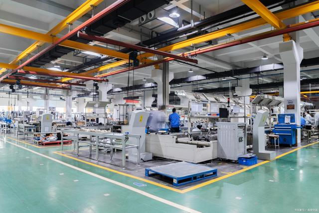

We understand the definition of non-standard automation literally: non-standard means non-standard, which means that it does not mean that it is completely implemented in accordance with the unified standards stipulated by the country, but it is based on serving customers, which is a very important premise, so it requires separate development.

The most important direction in the development of non-standard equipment is to conform to customers' usage habits and expectations, so as to achieve better results for them. Therefore, the production of non-standard automation equipment is also based on the future market and customer needs. We hope to provide more effective and exquisite non-standard equipment to customers. If you have any needs, you can contact us at any time.
The above is a simple understanding of non-standard equipment.